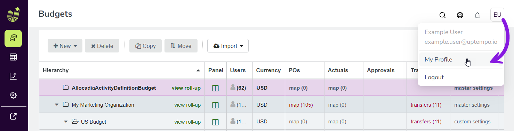

Personalize your Uptempo user experience
You can adjust some aspects of how Uptempo works to personalize the user experience to your preferences.
You can set:
Your number format, to customize how numbers (such as for currency amounts) are displayed, based on regional conventions.
Your date format, to customize how all calendar dates are displayed.
Your start page, to customize the page that is displayed by default each time you sign in to Uptempo.
Customize how numbers are formatted in Uptempo
Every country has its own conventions for representing numbers. These include how digits are grouped, and which characters are used to separate decimals and digit groups.
You can customize the regional number format in Uptempo so that all numbers are displayed in a way that is familiar to you.
Set your preferred regional number format
On any page in Uptempo, click the User Menu (the button with your initials) in the page header.
In the User Menu, click My Profile:

On the Edit Profile page, use the Number Format menu to set your preferred regional number format. Select the country whose standard for representing numbers you want to use in Uptempo.

Your change is saved automatically, and takes effect immediately.
Supported number formats
Uptempo supports the following number formats for displaying currency amounts:
- Format 1: Comma Thousand Separator, Period Decimal Separator
Pattern:
###,###,###.00Example:
123,456,789.00Example Countries: Canada, China, Egypt, Europe, Mexico, New Zealand, Singapore, UK, USA
- Format 2: Period Thousand Separator, Comma Decimal Separator
Pattern:
###.###.###,00Example:
123.456.789,00Example Countries: Austria, Belgium, Brazil, Denmark, Germany, Italy, Netherlands, Norway, Spain, Sweden
- Format 3: Space Thousand Separator, Period Decimal Separator
Pattern:
### ### ###.00Example:
123 456 789.00Example Countries: Australia, South Africa
- Format 4: Space Thousand Separator, Comma Decimal Separator
Pattern:
### ### ###,00Example:
123 456 789,00Example Countries: France, Poland
- Format 5: Indian Numbering System
Pattern:
##,##,##,###.00Example:
1,23,45,678.00Example Countries: Bangladesh, India, Nepal, Pakistan, Sri Lanka
- Format 6: No Decimal Places
Pattern:
###,###,###Example:
123,456,789Example Countries: Japan, Vietnam
- Format 7: Three Decimal Places
Pattern:
###,###,###.000Example:
123,456,789.000Countries: Bahrain, Jordan, Kuwait
Customize how dates are formatted in Uptempo
In calendar dates, the order in which the day, month, and year are typically displayed varies by region.
You can customize the date format in Uptempo so that all calendar dates are displayed in the order you expect, and with your preferred separator character (- or /).
Set your preferred calendar date format
On any page in Uptempo, click the User Menu (the button with your initials) in the page header.
On the Edit Profile page, use the Date Format menu to set your preferred date format. You can choose between the following options:
- YYYY-MM-DD
The ISO 8601 standard format for calendar dates. Displays June 10, 2026 as:
2026-06-10.- MM/DD/YYYY
The format typically used in the United States. Displays June 10, 2026 as:
06/10/2026.- DD/MM/YYYY
The format typically used in most countries, with a slash (
/) as the separator. Displays June 10, 2026 as:10/06/2026.- DD-MM-YYYY
The format typically used in most countries, with a hypen (
-) as the separator. Displays June 10, 2026 as:10-06-2026.- YYYY/MM/DD
Similar to the ISO 8601 standard format, but with a slash (
/) as the separator. Displays June 10, 2026 as:2026/06/10.
Your change is saved automatically, and takes effect immediately.
Customize your default start page in Uptempo
You can customize your start page in Uptempo so that signing in always takes you to the page you use most often.
Set your Uptempo start page
On any page in Uptempo, click the User Menu (the button with your initials) in the page header.
On the Edit Profile page, use Start Page menu to set your preferred starting page after you sign in.
Your change is saved automatically, and takes effect the next time you sign in to Uptempo.